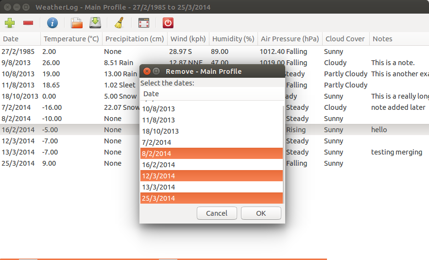
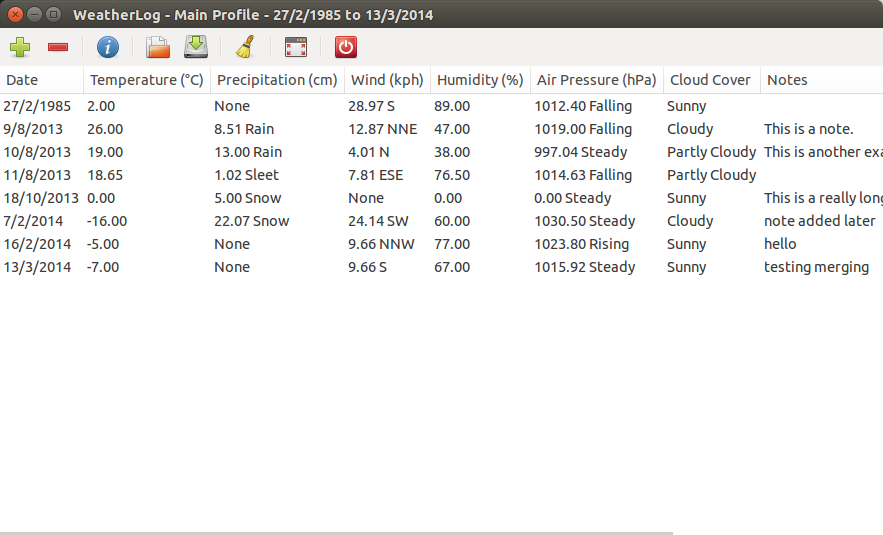

Removing Data
If you want to remove a row of data, or multiple rows, you can do so by choosing Remove from the Weather menu, pressing Control-R, or clicking the toolbar button with the minus sign. This will show the Remove window, from which you can select one or more dates that you want to remove.
After selecting the date(s) to remove and clicking OK, confirm that you want to delete this data (if delete confirmations are set in the options) and the data will be removed.
Clearing Data
If you decide you want to start over, choosing Clear Current Data from the Weather menu will delete the data in the current profile. Make sure you want to do this first, as it cannot be reversed unless you have backed up the data.
If you want to delete all the data, you can choose Clear All Data, also located in the Weather menu. This will remove all profiles, as well as any other data files used.